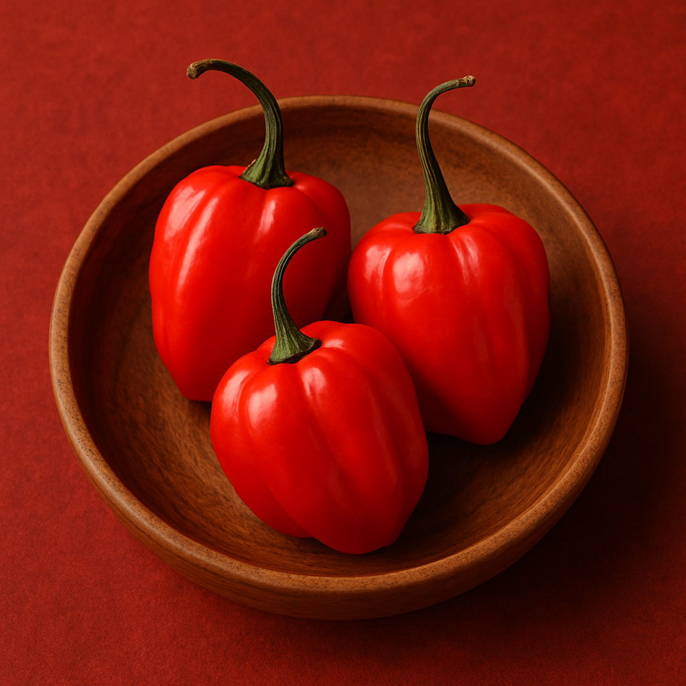
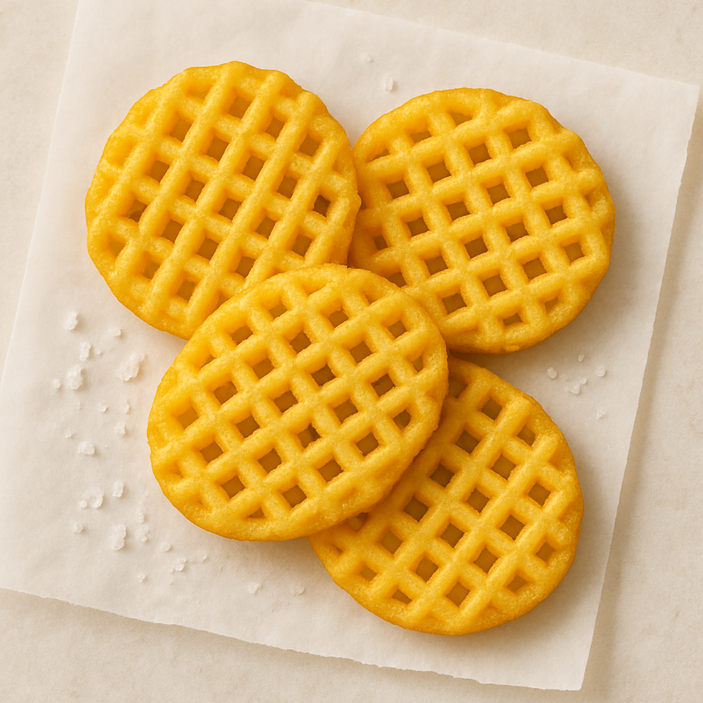

会社員時代の実績ストーリー
東ハト時代に携わったヒット商品の裏側をご紹介します。

『暴君ハバネロ』シリーズ：
激辛ブームの火付け役
ただ辛いだけではなく、ハバネロ本来のフルーティさや後引きのある旨みを引き出す味のストーリー設計を追求。“辛い＝快感”という新しい価値づけが支持され、発売から約1年で累計3,000万袋を出荷する爆発的ヒットとなりました。激辛ブームの火付け役として、今も愛されるブランドです。

『あみじゃが』：
技術的挑戦とロングセラーの確立
他社ではまず成型できないと言われるポテトリングの技術を、あえて「網状」に進化させるチャレンジに踏み込み、製法を要素分解・再構築することで実現。厚切りポテトチップスの新カテゴリーを築きました。
その品質は消費者からも高く評価され、代表フレーバー『あみじゃが・うましお味』は、食品クチコミサイト「もぐナビ」のベストフードアワード2023（ポテトチップス部門）で2年連続第1位・殿堂入りを受賞しているロングセラー商品です。

品質バラつき抑制で安定供給をサポート
原料起因のトラブルに対し、現場に入り込んで工程条件を最適化。クレーム対応に追われる負荷を減らし、生産性も高めるオペレーションを整備。「改善できる人」として現場の信頼を勝ち取り、強いチーム作りにも貢献しました。
Current Works
現在は企業の「社外開発部長」として、スタートアップから中堅メーカーまで、新規事業の立ち上げに伴走。「作れる工場が見つからない」という相談から入り、マッチングから量産立ち上げまでをサポートしています。